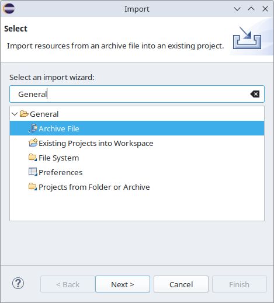
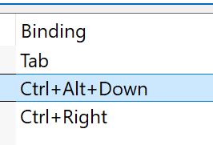
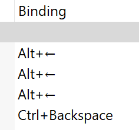
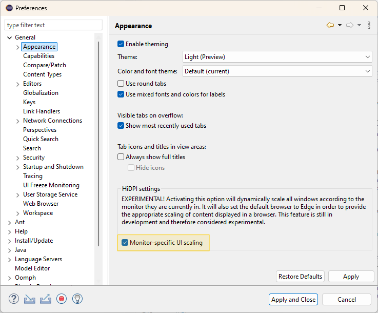
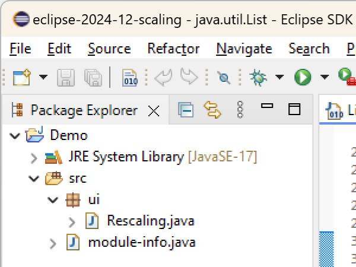
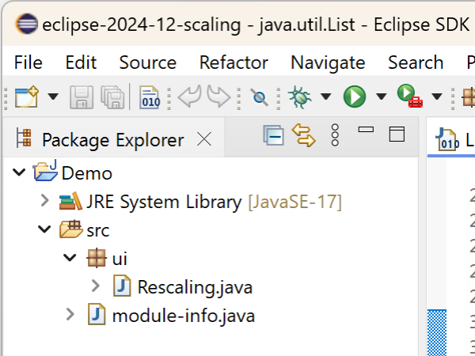

Here are descriptions of some of the more interesting or significant changes made to the Eclipse Platform for the 4.35 release of Eclipse. They are grouped into:
We also recommend to read the Tips and Tricks.
Views, Dialogs and Toolbar |
|
| Filter by Category |
The search filter in the "Import/Export" wizard, as well as the "Show View" dialog has been extended to also support category names. On a match, all elements in the category are shown. This changes the previous behavior where only entries were matched and searching by a category would result in an empty tree.  |
Themes and Styling |
|
| Improved Light Theme |
After many years of stability we have reworked the light theme of Eclipse to follow more modern design principles, similar to other major IDEs:
These improvement where published as a preview in the 4.33 release. The improvements are now integrated in the standared light theme. |
| Improved Display of Arrow Keys in Key Binding |
Up to now they up, down, left and right arrow key have been displaye as UP, DOWN.. in the display of key bindings on windows. This has now changed so that these are displayed as arrow smybols (just like it's e.g. done on macOS). This makes this display of key bindgins look nicer and also makes them much shorter.   |
General Updates |
|
| New System Property: eclipse.appName |
This new system property allows to set the application name with which Eclipse is registered in the operating system. This option is helpful to distinguish and group Eclipse instances. |
| Enhanced Monitor-Specific UI Scaling (Experimental, Windows only) |
In the previous release, a preference to enable an improved, monitor- and resolution-specific UI scaling on Windows was introduced. The feature has been largely improved since then.The feature makes each window adapt its scaling to the monitor it is currently placed on in a sharp, resolution-specific way and without requiring the application to restart. When using multiple windows, each of them will adapt its scaling to the monitor it is placed on. When enabled, this new feature replaces the current, limited scaling support for high-resolution monitors, which initializes the application's window according to the scaling of the primary monitor at application startup and produces blurry scaling when moving the window to another monitor unless you restart the application. To enable this feature, check the Monitor-specific UI scaling box on the Appearance preference page (Window > Preferences > General > Appearance), as shown in the image below. The feature is still under development, thus marked as experimental and disabled by default. We encourage users to explore this feature and share their feedback to help us improve the functionality.  The images below demonstrate the scaling behavior in an extract of an Eclipse application when moving the window from a primary monitor with 100% scaling to another monitor with 200% scaling, first having the feature disabled and second having it enabled. With monitor-specific UI rescaling disabled:  With monitor-specific UI rescaling enabled:  |
| Edge as Default Browser on Windows |
Edge replaces Internet Explorer as the default browser instantiated by SWT. Internet Explorer is outdated and out of
maintenance. It is replaced with the WebView2 engine used by Edge. Switching to this modern engine will ensure that
use cases keep working or enables uses cases that are not working with Internet Explorer anymore or have never been
working with it. As an example, if an Eclipse application is executed in dark mode, according CSS styling of web
pages will be applied if embedded via:
In consequence, every SWT- and Eclipse-based product will by default now create instances of the Feedback: In case you experience any issues or limitations with the Edge browser implementation, please report them back in the umbrella issue (#1466). In case you want to or need to still use Internet Explorer in your Eclipse product, you can:
|
| E4 XPath supported reimplemented and revised |
The XPath support of Eclipse E4 (i.e. the Plug-in
Furthermore it has been determined that the |